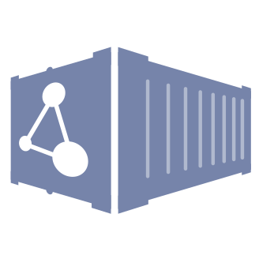

<!--
   Copyright 2018 OICR
 *
   Licensed under the Apache License, Version 2.0 (the "License");
   you may not use this file except in compliance with the License.
   You may obtain a copy of the License at
 *
       http://www.apache.org/licenses/LICENSE-2.0
 *
   Unless required by applicable law or agreed to in writing, software
   distributed under the License is distributed on an "AS IS" BASIS,
   WITHOUT WARRANTIES OR CONDITIONS OF ANY KIND, either express or implied.
   See the License for the specific language governing permissions and
   limitations under the License.
-->

<div fxLayout="row wrap">
  <div class="p-3" fxFlex="50" fxFlex.lt-md="100">
    <mat-card class="mb-2 h-100" *ngIf="dockstoreToken">
      <div fxLayoutAlign="space-between">
        <mat-card-header>
          <div mat-card-avatar matBadge="✓">
            
          </div>
          <mat-card-title class="normal-line-height">Dockstore Account</mat-card-title>
          <mat-card-subtitle class="accent-1-dark normal-line-height">
            <strong>Username: {{ username$ | async }} </strong>
          </mat-card-subtitle>
        </mat-card-header>
        <mat-chip-list>
          <mat-chip class="bubble"> Main Account </mat-chip>
        </mat-chip-list>
      </div>
      <mat-card-content>
        <div>
          Use with our CLI utilities or with our
          <a [href]="dsServerURI + '/static/swagger-ui/index.html#'" target="_blank">REST web service interface</a> to work with and launch
          tools and workflows. See the <a routerLink="/onboarding">Onboarding</a> page for more details on using the CLI.
        </div>
      </mat-card-content>
      <mat-form-field appearance="outline" class="w-75">
        <mat-label class="accent-1-dark">
          <strong>Token</strong>
        </mat-label>
        <input matInput readonly [type]="show ? 'text' : 'password'" value="{{ dockstoreToken }}" />
        <button
          mat-icon-button
          matSuffix
          class="accent-1-dark"
          [cdkCopyToClipboard]="dockstoreToken"
          (cbOnSuccess)="isCopied1 = true"
          matTooltip="Copy Token"
          appSnackbar
        >
          <mat-icon>file_copy</mat-icon>
        </button>
      </mat-form-field>
      <button
        [matTooltip]="show ? 'Hide token' : 'Show token'"
        mat-button
        color="secondary"
        class="accent-1-dark small-mat-btn-skin small-btn-structure mat-elevation-z"
        (click)="show = !show"
      >
        <mat-icon class="mat-icon-sm">{{ show ? 'visibility_off' : 'visibility' }}</mat-icon>
        <span> Show </span>
      </button>
    </mat-card>
  </div>

  <div *ngFor="let row of accountsInfo" class="p-3" fxFlex="50" fxFlex.lt-md="100">
    <mat-card class="mb-2 h-100">
      <div class="h-100" fxLayout="column" fxLayoutAlign="space-between stretch">
        <div>
          <div fxLayoutAlign="space-between">
            <mat-card-header>
              <div mat-card-avatar matBadge="✓" [matBadgeHidden]="!row.isLinked">
                
              </div>
              <mat-card-title class="normal-line-height">{{ row.name }} Account&nbsp;</mat-card-title>
              <!-- TODO: Reduce margin bottom from subtitle's default 16px to 7px -->
              <mat-card-subtitle class="accent-1-dark normal-line-height" *ngIf="row.isLinked; else placeholder">
                <strong>Username: {{ row.source | getTokenUsername: tokens }} </strong>
                <span *ngIf="row.name === 'ORCID'">
                  
                  <a href="{{ orcidRootUrl }}/{{ orcidId$ | async }}">{{ orcidId$ | async }}</a>
                </span>
              </mat-card-subtitle>
              <ng-template #placeholder><br /></ng-template>
            </mat-card-header>
            <mat-chip-list>
              <mat-chip
                class="bubble"
                *ngIf="row.control"
                matTooltip="Pull your workflows from cloud source control to make them available on Dockstore"
              >
                Source Control
              </mat-chip>
              <mat-chip class="bubble" *ngIf="row.bold" matTooltip="A method of logging into Dockstore"> Login Method </mat-chip>
              <mat-chip
                class="bubble"
                *ngIf="row.docker"
                matTooltip="Link Docker repository accounts to help Dockstore find information on your Docker containers"
              >
                Docker Repository
              </mat-chip>
              <mat-chip
                class="bubble"
                *ngIf="row.research"
                matTooltip="Services popular among scientific researchers to aid with publications and citation"
              >
                Research
              </mat-chip>
            </mat-chip-list>
          </div>
          <mat-card-content>
            <p>
              {{ row.message }}
              <strong>{{ row.bold }}</strong>
            </p>
            <div *ngIf="row.source === TokenSource.ORCID">
              See <a target="_blank" rel="noopener noreferrer" href="https://info.orcid.org/what-is-orcid/">ORCID</a> and
              <a target="_blank" rel="noopener noreferrer" [href]="Dockstore.DOCUMENTATION_URL + '/end-user-topics/ORCID.html'">docs</a> for
              information on what is ORCID.
            </div>
          </mat-card-content>
        </div>
        <div>
          <hr />
          <span class="pull-right" fxLayoutAlign="end end">
            <!-- This button needs to be vertically centered -->
            <button
              *ngIf="row.isLinked === false; else linked"
              mat-button
              class="accent-1-dark small-mat-btn-skin small-btn-structure mt-2"
              [attr.id]="'link-' + row.name"
              (click)="link(row.source)"
              matTooltip="Link the account"
            >
              <mat-icon class="mat-icon-sm" *ngIf="row.name !== 'ORCID'; else orcid">link</mat-icon>
              <span> Link Account</span>
            </button>
          </span>
          <ng-template #linked>
            <!-- This button needs to be vertically centered -->
            <button
              mat-raised-button
              class="accent-1-dark-btn small-mat-btn-skin small-btn-structure mt-2"
              [attr.id]="'unlink-' + row.name"
              (click)="unlink(row.source)"
              matTooltip="Unlink the account"
            >
              <mat-icon class="mat-icon-sm" *ngIf="row.name !== 'ORCID'; else orcid">link_off</mat-icon>
              <span> Unlink Account</span>
            </button>
          </ng-template>
          <ng-template #orcid>
            
          </ng-template>
        </div>
      </div>
    </mat-card>
  </div>
</div>
